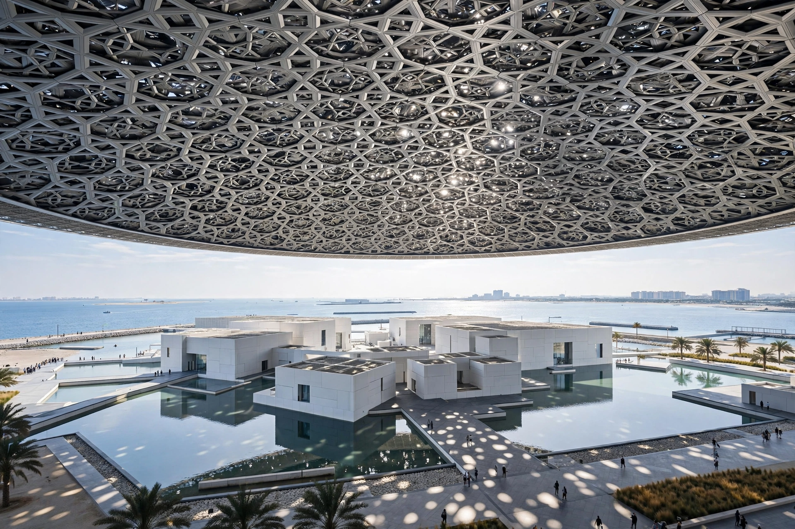

| Established | 8 November 2017 (opened 11 November 2017) |
|---|---|
| Location | Saadiyat Island, Abu Dhabi, United Arab Emirates |
| Type | Art museum |
| Architect | Jean Nouvel |
| Director | Manuel Rabaté |
Louvre Abu Dhabi (Arabic: اللوفر أبوظبي) is an art museum located on Saadiyat Island in Abu Dhabi, United Arab Emirates. It opened in November 2017 under an agreement between Abu Dhabi and France, through which the museum is associated with the Musée du Louvre in Paris and may use the Louvre name until 2047.
The intergovernmental agreement was signed in 2007. Abu Dhabi paid for the use of the Louvre name, for loans of artworks, and for expertise from French museums. Construction, designed by Pritzker Prize-winning architect Jean Nouvel, was delayed several times before completion in 2017. It was inaugurated by French President Emmanuel Macron, UAE Vice President Mohammed bin Rashid Al Maktoum, and Crown Prince Mohammed bin Zayed Al Nahyan.
The museum covers about 24,000 square metres of galleries under a vast dome 180 metres in diameter. The dome is composed of eight layers of geometric star patterns; sunlight filtering through it creates a moving 'rain of light' inspired by palm fronds in an oasis. The museum-city sits in the sea, with water channels running between white gallery buildings.
The permanent collection spans ancient to contemporary art from around the world, arranged to trace universal themes and shared influences across cultures rather than by geography alone. Works have included pieces attributed to Leonardo da Vinci, including La Belle Ferronnière on loan. The museum announced the display of Salvator Mundi, purchased in 2017, though its public unveiling was postponed.